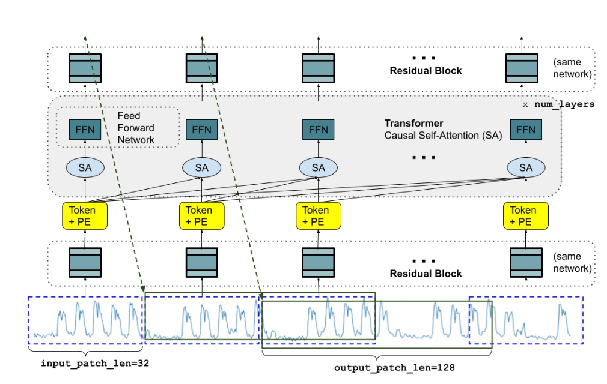
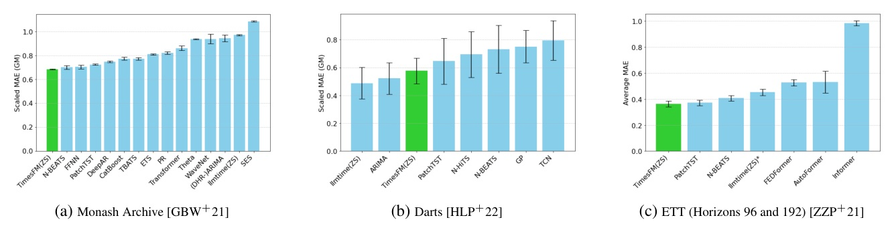
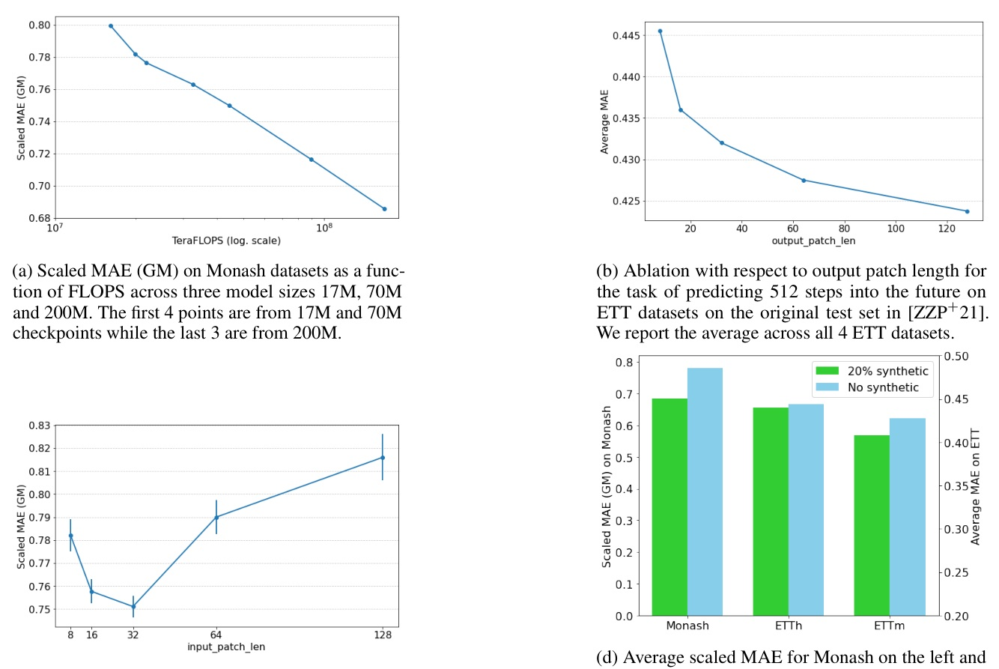
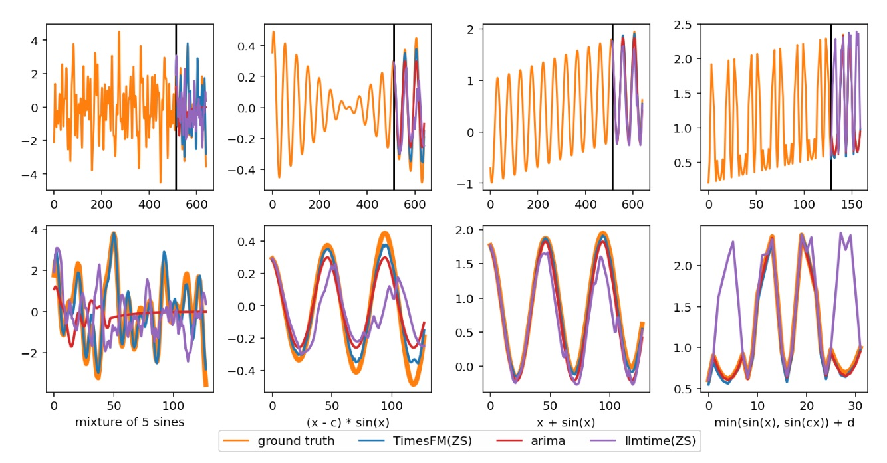
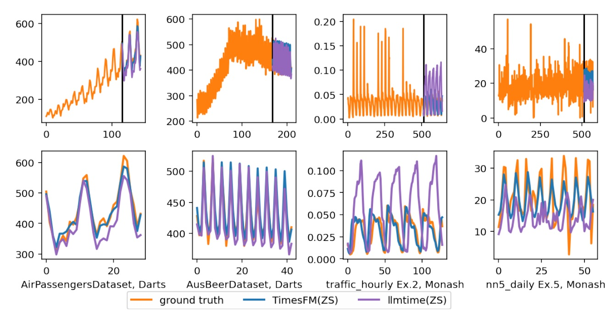

今天選題走週日 repo/report 路線：TimesFM 不是單純熱門套件，而是有 peer-reviewed paper、open checkpoints、2026 repo updates 的 forecasting foundation model。
把 time-series patch 當作 token，用 decoder-only Transformer 做 zero-shot forecasting。
200M parameters + O(100B) real/synthetic timepoints，讓單一模型在 Monash / Darts / ETT 上接近或超過 per-dataset supervised baselines。

Forecasting 不該一格一格吐；TimesFM 讓 output patch 比 input patch 更長。
p=32, h=128 時，256-step horizon 只需 2 次 autoregressive generation；若 h=p=32，則要 8 次。
| Source | Scale | Why it matters |
|---|---|---|
| Wiki Pageviews | ~300B timepoints | large public behavioral seasonality |
| Google Trends | ~0.5B timepoints | query interest across hourly/daily/weekly/monthly |
| Synthetic | 3M x 2048 = 6.144B | fills underrepresented periods/trends |
| Public datasets | M4, Electricity, Traffic, Weather... | benchmark-like real-world shapes |

| Benchmark | TimesFM | Key comparison | Source |
|---|---|---|---|
| Monash scaled MAE GM | 0.6846 | best listed in Table 4; >25% better than llmtime in text | Tab.4 p.15 |
| Darts scaled MAE GM | 0.5767 | within significance of llmtime 0.4882 / ARIMA 0.5219 | Tab.3 p.14 |
| ETT avg MAE | 0.36 | close to PatchTST 0.37 and PatchTST(ZS) 0.35 | Tab.5 p.16 |
| ETTh1 10% FT avg | 0.426 | better than GPT4TS(FT) 0.525 | Tab.2 p.14 |
| Method | Avg MAE | Role |
|---|---|---|
| PatchTST(ZS) | 0.35 | pretrained zero-shot PatchTST variant |
| TimesFM(ZS) | 0.36 | decoder-only zero-shot |
| PatchTST | 0.37 | supervised long-horizon baseline |
| llmtime(ZS) | 0.45 | LLM prompting baseline |
| FEDFormer / AutoFormer | 0.53 | supervised baselines |
| Informer | 0.99 | older long-horizon baseline |
| Dataset avg | TimesFM(FT) | GPT4TS(FT) | Paper claim |
|---|---|---|---|
| ETTh1 | 0.426 | 0.525 | 18% better |
| ETTh2 | 0.410 | 0.421 | 3% better |
| ETTm1 | 0.388 | 0.441 | 12% better |
| ETTm2 | 0.334 | 0.335 | roughly tied |

TimesFM work 的真正原因：不是「Transformer 魔法」，而是 patch geometry 讓任意 horizon/context 可以被同一 objective 覆蓋。


Can large pretrained models trained on massive amounts of time-series data learn temporal patterns that can be useful for time-series forecasting on previously unseen datasets?
作者把問題定成：大量時間序列預訓練是否能學到可泛化到未見資料集的時間模式。Introduction p.1 lines 37-40
The key elements of our foundation model are twofold: 1) a large-scale time-series corpus ... and 2) a decoder style attention architecture with input patching.
貢獻不是單純把 Transformer 套上去，而是資料規模/多樣性與 decoder-only patch architecture 的組合。Introduction p.2 lines 53-60
We can see that there is a performance drop on Monash... for the 15min ETTm datasets the model with synthetic data performs quite a bit better.
synthetic data 的價值不是湊數，而是補真實資料集中不足的 granularity / periodicity。§6.2 p.9 lines 491-499
今天的 repo route 收斂到 TimesFM：一個把「foundation model」概念搬進 forecasting 的乾淨案例。